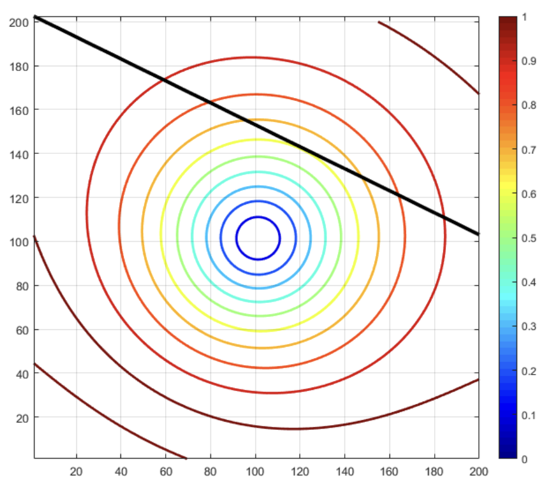

즉 score 함수는 \(s(\theta) = \ell ' (\theta)\), observed information은 \(J(\theta) = - \ell '' (\theta)\)이다.
Solving the maximum of the approximation \[
\theta = \theta^{*} + \frac{s(\theta^{*})}{J(\theta^{*})} = \theta^{*} - \frac{\ell ' (\theta^{*})}{\ell '' (\theta^{*})}
\]
2.3.1 Stoping criteria
반복법에서는 어느 시점에 어떤 기준을 가지고 멈춰야 할지를 정하는 것이 중요하다.
Absolute convergence: 이는 \(x\)가 클 경우에 시간이 오래 걸릴 수 있다. \[|x^{(t+1)} -x^{(t)}| < \varepsilon \text{ or }\| \pmb{x}^{(t+1)} - \pmb{x}^{(t)} \| < \varepsilon\]
Relative convergence: 이는 \(|x^{(t)}|\)가 작을 경우에 불안정할 수 있다. \[
\frac{|x^{(t+1)}- x^{(t)}|}{|x^{(t)}|} < \varepsilon \text{ or }\frac{\|x^{(t+1)}- x^{(t)}\|}{\|x^{(t)}\|} < \varepsilon
\]
Information \[
J(\mu) = - \nabla^2 \ell (\mu) = - \sum_{i=1}^n -\Sigma^{-1} = n \Sigma^{-1} = \Big( \frac{1}{n}\Sigma \Big)^{-1}
\]
2.4 Fisher scoring
뉴턴의 방법은 \(\ell'' (\theta) <0\)이거나 \(J(\theta) >0\)이라는 조건을 필요로 한다. 다변량에서는 \(\pmb{J}(\pmb{\theta})\)가 positive definite여야 한다.
\(\pmb{J}(\pmb{\theta})\)는 stochastic (depend on data)
\(\pmb{I}(\pmb{\theta}) = E[ \pmb{J}(\pmb{\theta})]\): expected information matrix
이때 \(\pmb{I}(\pmb{\theta}) = \text{Var}[\pmb{s}(\pmb{\theta})]\)가 항상 positive (semi-)definite임을 보일 수 있다.
Fisher scoring algorithm은 다음과 같다. \[
\pmb{\theta}^{(t+1)} = \pmb{\theta}^{(t)} + [\pmb{I}(\pmb{\theta}^{(t)})]^{-1}\pmb{s}(\pmb{\theta}^{(t)})
\] 이렇게 하면 계산이 좀 더 쉬워지고 뉴턴의 방법에 비해 좀 더 안정적으로 된다고 한다.
Example 2.1 (\(p\)차원에서 정규분포를 따르는 자료의 \(\pmb{I}(\pmb{\theta})\))\(\mathbb{R}^p\)에서 \(I(\mu) = E(J(\mu)) = \text{Var}(s(\mu))\)임을 보일 수 있다.
[,1] [,2] [,3] [,4]
1.000000e+01 10.000000 1.000000e+01 10.0000000
x 2.230259e+01 -2.302585 4.539993e-05 5.0000227
x 4.770987e+01 NaN 9.999546e-01 2.5033802
x 9.928488e+01 NaN 3.678961e-01 1.2925941
x 2.031678e+02 NaN 6.921891e-01 0.7835759
x 4.116496e+02 NaN 5.004793e-01 0.6201728
x 8.293193e+02 NaN 6.062400e-01 0.5790121
x 1.665359e+03 NaN 5.453977e-01 0.5697319
x 3.338136e+03 NaN 5.796112e-01 0.5677045
x 6.684385e+03 NaN 5.601161e-01 0.5672648
x 1.337758e+04 NaN 5.711428e-01 0.5671696
x 2.676466e+04 NaN 5.648795e-01 0.5671490
x 5.353951e+04 NaN 5.684286e-01 0.5671445
x 1.070899e+05 NaN 5.664148e-01 0.5671436
x 2.141914e+05 NaN 5.675566e-01 0.5671433
x 4.283951e+05 NaN 5.669089e-01 0.5671433
x 8.568031e+05 NaN 5.672762e-01 0.5671433
x 1.713620e+06 NaN 5.670679e-01 0.5671433
x 3.427254e+06 NaN 5.671860e-01 0.5671433
x 6.854523e+06 NaN 5.671190e-01 0.5671433
x 1.370906e+07 NaN 5.671570e-01 0.5671433
2.8 Nelder-Mead
Starts with \(p+1\) distinct points \(\pmb{x}_1, \ldots, \pmb{x}_{p+1}\)
Points ranked through \(g(\pmb{x}_1), \ldots, g(\pmb{x}_{p+1})\)
\(\pmb{x}_{\text{best}}\) and \(\pmb{x}_{\text{worst}}\) best and worst points
앞서는 분산을 알고있다고 하는 상황에서 \(\hat{\pmb{\beta}}_{\text{WLS}}\)를 구했다.
Q. 만약 분산이 알려져있지 않고 대신 모수의 함수라고 하면 어떻게 구할 것인가? \[
\min_{\pmb{\beta}} \sum w_i (\pmb{\beta},\pmb{x}_i)(y_i - \pmb{x}_i^T\pmb{\beta}_i)^2
\] Then update the weights with previous estimate of parameter.
Useful trick, can be used for GLM (generalized linear models).
앞선 \(\min_{\pmb{\beta}} \sum w_i (\pmb{\beta},\pmb{x}_i)(y_i - \pmb{x}_i^T\pmb{\beta}_i)^2\)는 다음과 같이 반복법으로 풀 수 있다.
L1 regression은 outlier에 robust한 방법으로 quadratic loss를 absolute loss로 바꾸는 방법이다.
Absolute loss: \[
\text{argmin}_{\pmb{\beta}} \sum_{i=1}^n |y_i - \pmb{\beta}^T x_i|
\] 이때 \[
w_i (\pmb{\beta}) = \frac{1}{|y_i - \pmb{\beta}^T x_i|}
\] 로 두면 \[
\sum_{i=1}^n |y_i - \pmb{\beta}^T x_i| = \sum_{i=1}^n w_i (\pmb{\beta})(y_i - \pmb{\beta}^T x_i)^2
\] 여기서 IRLS를 하면 다음과 같다.
Start with \(w_i^{(0)} = 1\) (=least squares regression) to get \(\pmb{\beta}^{(0)}\)
In iteration \(k\) set \(w_i^{(k)} = \frac{1}{|y_i -\pmb{\beta}^{(k-1)^T}x_i|}\) or \(\min \Big\{\frac{1}{|y_i -\pmb{\beta}^{(k-1)^T}x_i|} , W_{\max} \Big\}\)
######################################################### set upmodelbeta=c(1,1)set.seed(231171)n =20eps=rnorm(n,0,1)x=rnorm(n,0,2)Xdata=cbind(1,x)y=beta[1]+beta[2]*x+eps################################################################# code## Least squaresleastSquares =function(X,y){ betaHat =solve(t(X)%*%X) %*%(t(X)%*%y )}# IRLSIRLS_L1 =function(X,y){ betaHat =solve(t(X)%*%X) %*%(t(X)%*%y ) pred = X%*%betaHat res =(y-pred) betaPrev=c(0,0) betaWHat=betaHat it=0while(sum(abs(betaPrev-betaWHat))>0.0001& it<100) { maxW=10 it=it+1 betaPrev=betaWHat pred= Xdata%*%betaPrev res=(y-pred) w =1/abs(res) w[w>maxW]=maxW # adjustment to avoid super large numbers [ size relative to problem] W =diag(as.vector(w)) betaWHat =solve(t(Xdata)%*%W%*%Xdata) %*%(t(Xdata)%*%W%*%y )#show(betaWHat) } betaWHat}## Standard case betaHat_L2=leastSquares(Xdata,y)betaHat_L1=IRLS_L1(Xdata,y)Xplot=cbind(1,c(-5,0,5))plot(x,y,xlim=c(-6,6),ylim=c(-6,6))lines(c(-5,5),c(-4,6),lty=3)lines(Xplot[,2], Xplot%*%betaHat_L2,lty =2,col=3,lwd=2)lines(Xplot[,2], Xplot%*%betaHat_L1,lty =2,col=4,lwd=2)maxW=10pred= Xdata%*%betaHat_L1res=(y-pred)w =1/abs(res)plot(w,type="l",log="y",ylim=c(0.1,300))w[w>maxW]=maxW points(w)### Case with outliers ymod=yymod[1]=0ymod[14]=0betaHat_L2m=leastSquares(Xdata,ymod)betaHat_L1m=IRLS_L1(Xdata,ymod)plot(x,ymod,xlim=c(-6,6),ylim=c(-6,6))lines(c(-5,5),c(-4,6),lty=3)lines(Xplot[,2], Xplot%*%betaHat_L2m,lty =2,col=3,lwd=2)lines(Xplot[,2], Xplot%*%betaHat_L1m,lty =2,col=4,lwd=2)maxW=10pred= Xdata%*%betaHat_L1mres=(ymod-pred)w =1/abs(res)plot(w,type="l",log="y",ylim=c(0.1,300))w[w>maxW]=maxW points(w)
2.14 Convex Optimization
Convex optimization은
Least squares
Linear programming
Convex quadratic minimization with linear or convex quadratic constraints
\(\lambda: (q \times 1)\): the Lagrangian multiplier
Geometric interpretation: Minimum occurs when the contour line is tangent to constraint

Figure: Lagrangian multiplier.
그림은 Lagrangian multiplier를 설명하고 있는데, 그림에서 검은 선이 제약식을 나타낸다고 볼 수 있다. \(f(\pmb{x})\)를 \(f(\pmb{x})+\frac{\rho}{2}\|\pmb{A x} - \pmb{b}\|^2\)로 바꾸는 것은 최적화 결과에 영향을 미치지 않는다.
2.14.2 Algorithm for solution: Method of multipliers
\(\text{minimize}_{\pmb{x}} \{ f(\pmb{x})+\frac{\rho}{2}\|\pmb{A x} - \pmb{b}\|^2 \}\quad{}\text{subj to } \pmb{A x} = \pmb{b}\)문제를 풀기 위해 method of multipliers 알고리즘을 적용할 수 있다.